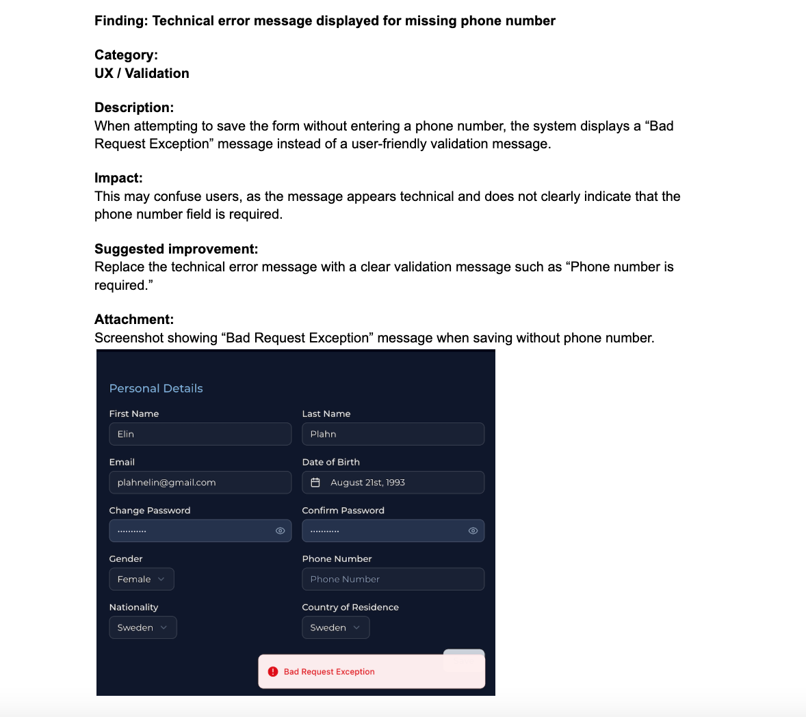
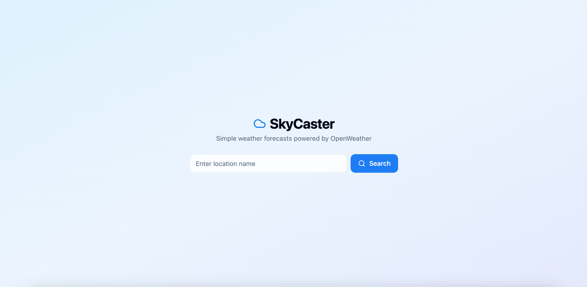
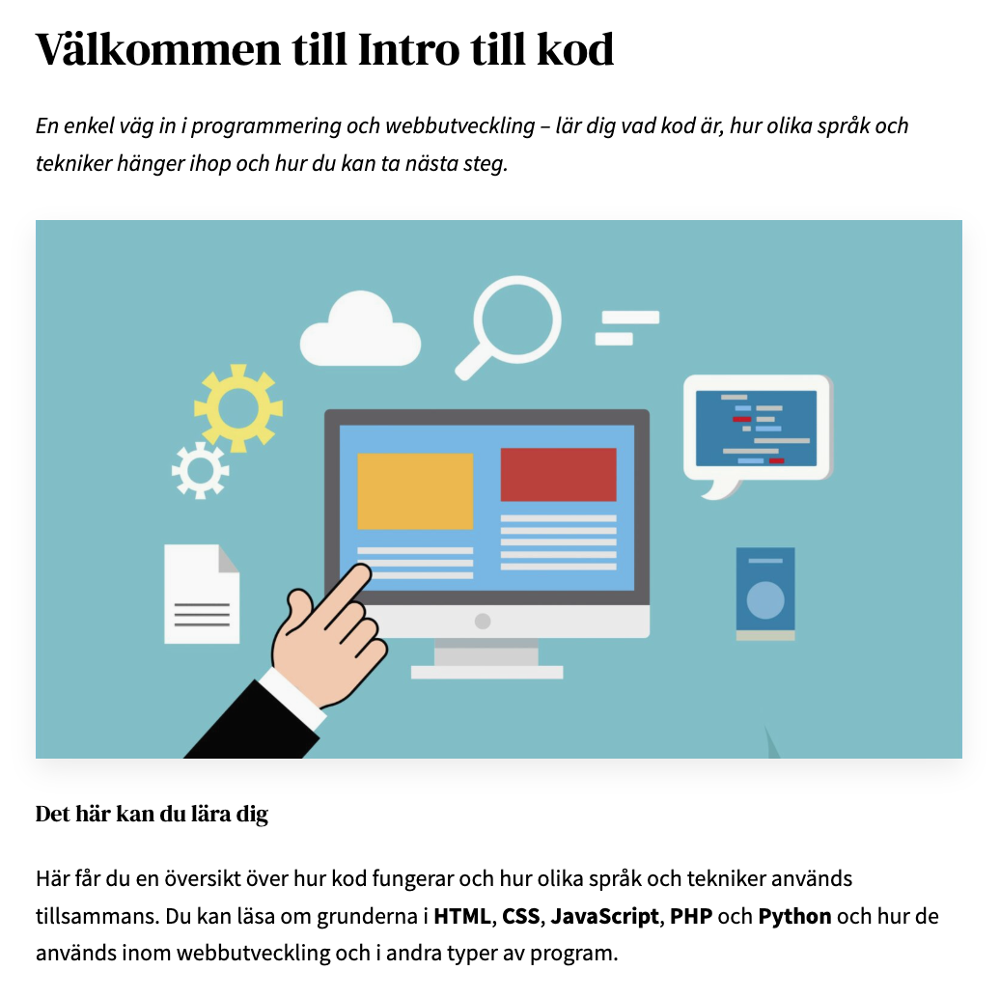
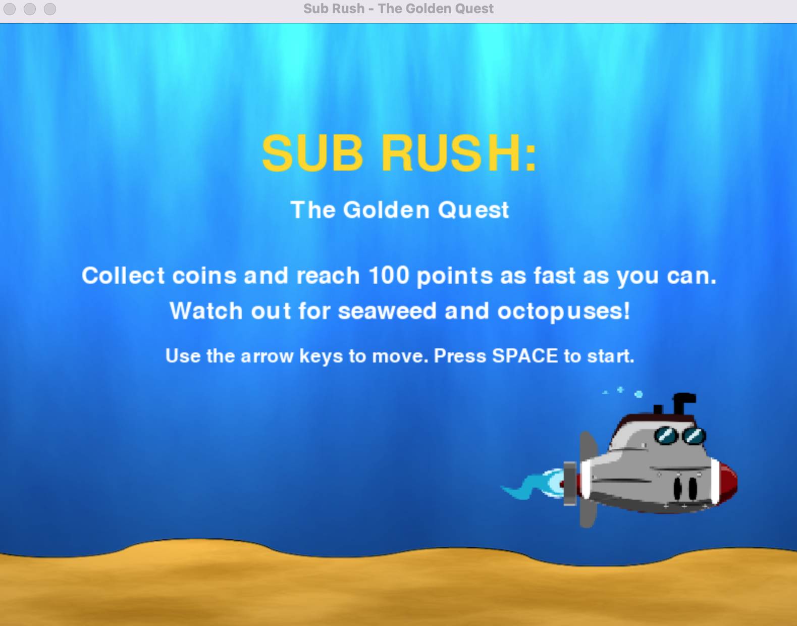

I build and test user friendly interfaces with a strong focus on usability, clarity and how systems behave in practice.
I am particularly interested in quality assurance and user experience, and enjoy identifying issues, improving flows and understanding how users interact with digital products.
I have a background in frontend development and a strong interest in quality assurance and user experience.
During my studies and internship, I worked with testing a platform under development, identifying usability issues and documenting findings in a structured way.
I enjoy understanding how systems work from a user perspective, exploring edge cases and improving clarity and overall user experience.
I am now looking for opportunities where I can continue developing within QA, UX-oriented testing and similar roles.
HTML, CSS, Python, PHP, JavaScript
Chrome DevTools (basic testing and inspection), VS Code, GitHub, WordPress
Here are selected projects from my studies and internship, with a focus on usability, testing, problem-solving and user experience.
Tested a platform under development, identifying usability issues and documenting findings in a clear, structured way.

Built and iteratively improved a weather application, focusing on usability, input handling, and interaction testing to enhance clarity and user experience.

Created a beginner friendly website with a focus on structure, clarity and how users navigate and understand content.

Developed and tested a simple game, focusing on core mechanics, bug identification and improving gameplay flow.

I am currently open to opportunities within QA, UX-oriented testing and junior technical roles. Feel free to reach out!
CV available upon request.